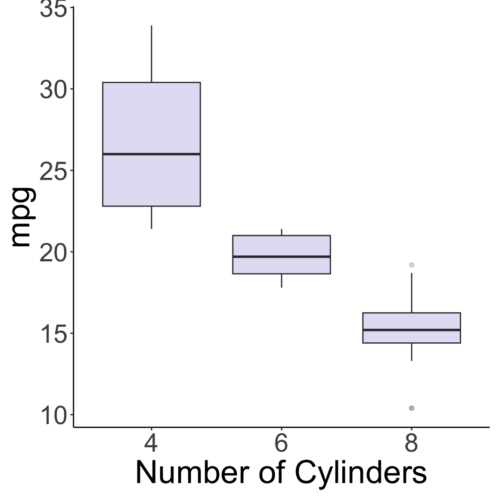
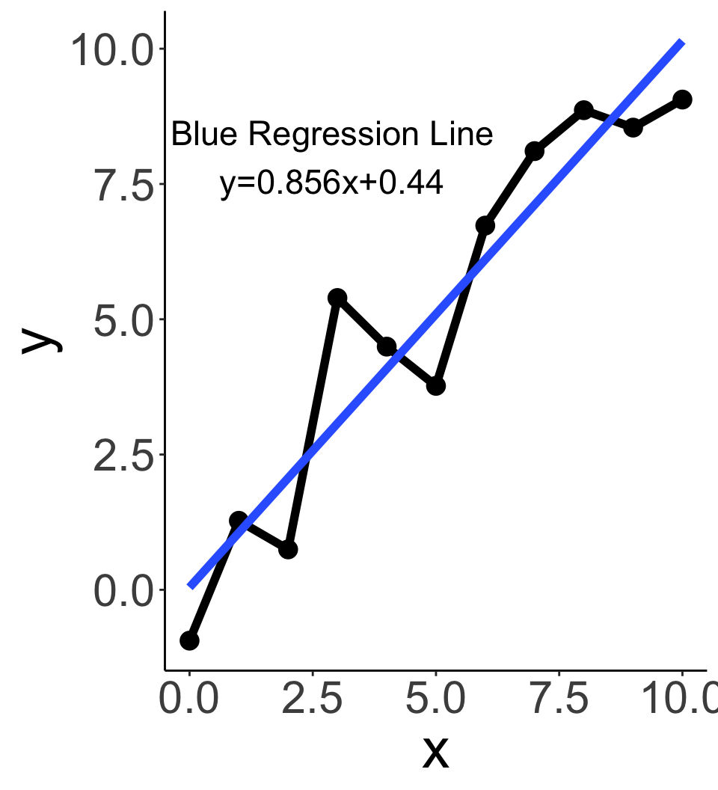
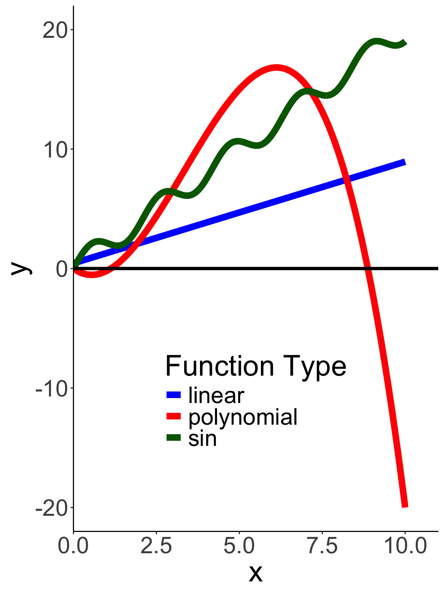
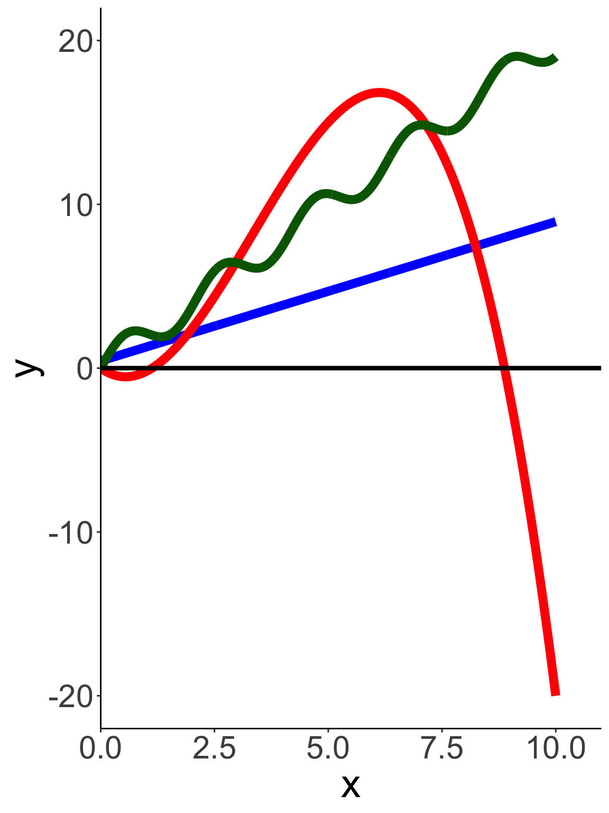
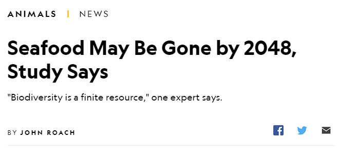
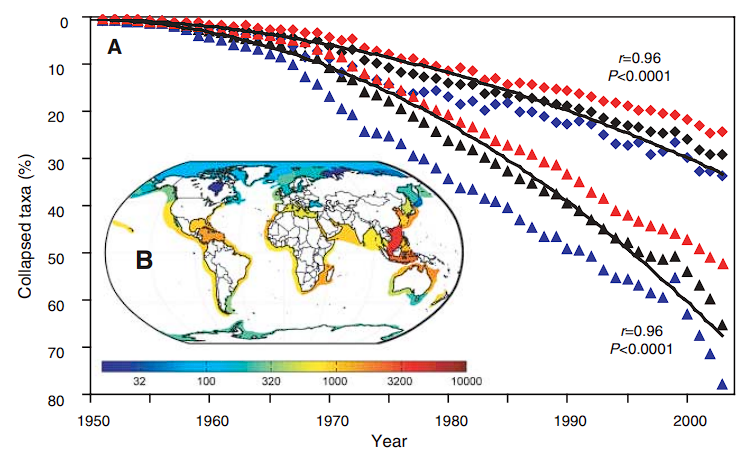
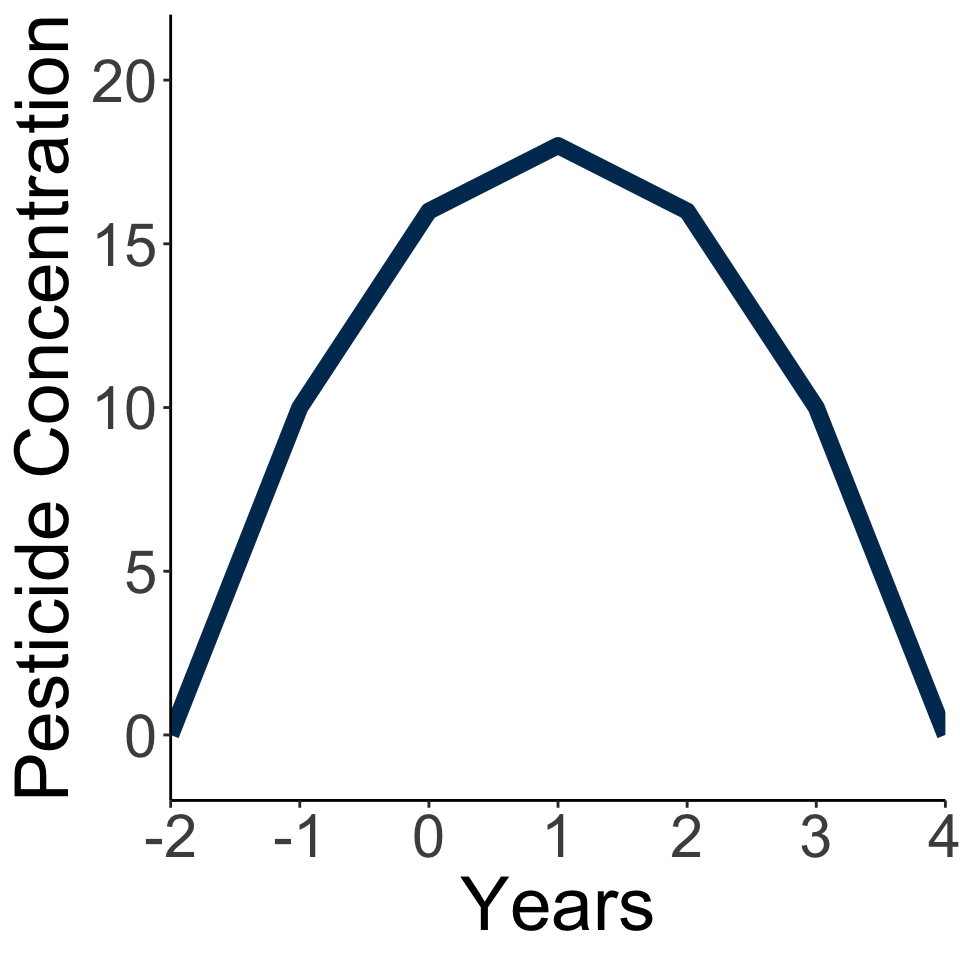
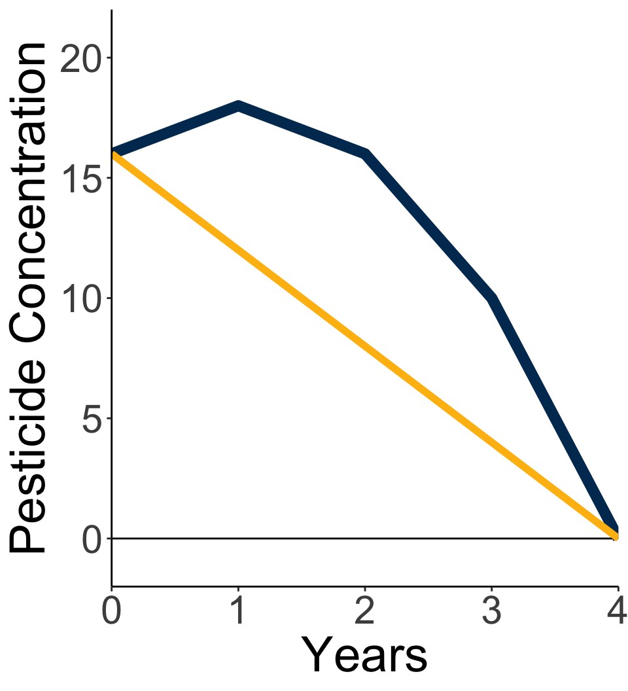

Fundamental Theorem of Algebra:
Introduction and Warm Up Algebra
Bren Calculus Workshop
Carmen Galaz García, Ph.D.
Bren School of Environmental Science & Management
Last updated: Sep 08, 2025
All materials have been adapted from Nathaniel Grimes work for the Bren Calculus Workshop.
Please fill out this survey
Workshop Objectives
Shake off the math dust
Equip students with the math skills to succeed in all Bren Courses
Explore how valuable math is to environmental science
Build a collaborative environment, crucial for success at Bren
About me
Carmen Galaz García (she/her)
- Assistant Teaching Professor @ Bren
Before this:
- Data Scienist @ NCEAS
- Ph.D. in Mathematics @ UCSB
Teaching:
- Python courses for Masters in Environmental Data Science (MEDS)
- MEDS Capstone Projects
- Supporting math and programming initiatives across Bren!
Research:
- NCEAS/TNC collaboration for invasive iceplant mapping analyzing remotely sensed images
Student Expectations
We expect all team members will:
Support and encourage their learning buddies and all classmates
Be open to learning from each other
Bring a collaborative attitude and communicate respectfully
See opportunities to share kownledge as a chance to deepend understanding
Complete all in-class assessments
Feel free to work with anyone on out of class exercises
Math in Environmental Science
Describe to your team what is the purpose of environmental science?
How would you go about solving environmental problems?
Math is an important tool in environmental science
Math helps us investigate the world and communicate our findings
Used by scientists to find evidence
Can be used to quantify relations, trends, and changes
Mathematical models can help us understand complex systems
Must be used responsibly and with awareness of potential biases and limitations
Helps us support arguments that can transform policy and actions
We need to understand the math to make decisions on it!
Math at Bren
In classes:
- ESM 201: Ecology of Managed Ecosystems
Lotka-Volterra Models \[ \begin{align} \frac{dN_1}{dt}&=r_1N_1\left(\frac{K_1-N_1-\alpha N_2}{K_1}\right)\\ \frac{dN_2}{dt}&=r_2N_2\left(\frac{K_2-N_2-\beta N_1}{K_2}\right) \end{align} \]
- ESM 222: Pollution Risk Management
Groundwater transport of absorbed contaminant \[ \frac{\partial C}{\partial t}=\left(\frac{D}{R}\frac{\partial^2t}{\partial x^2}\right)-\left(\frac{v}{R}\frac{\partial C}{\partial x}\right)-\frac{k}{R}C \]
In Research
Algebra
Rules of Algebra
Never change an equation, we rewrite into more useful forms
Manipulate BOTH sides of an equation with the SAME THING
Order of Operations (aka PEDMAS)
(P)aranthesis (E)xponents (D)ivide (M)ultiply (A)dd (S)ubtract [PEDMAS]
PEDMAS important for what order to manipulate equations
\[ 4*(y-4)+(x+1)^2=z \]
If I give you x and y, how would you solve this equation?
Often times we want flexible equations
Prices are important in economics, but not always available for environmental goods.
How do we get prices if we know quantity?
\[ \require{cancel} \begin{aligned} Q&=\frac{(400-P)}{80} &\text{Isolate P in terms of Q} \\ \end{aligned} \]
Often times we want flexible equations
Prices are important in economics, but not always available.
How do we get prices if we know quantity?
\[ \require{cancel} \begin{aligned} Q&=\frac{(400-P)}{80} &\text{Isolate P in terms of Q} \\ 80Q&=\frac{(400-P)\cancel{80}}{\cancel{80}} &\text{ Multiply both sides by 80} \\ 80Q-400&=\cancel{400}-\cancel{400} -P &\text{ Subtract both sides by 400} \\ -1(80Q-400)&=-P(-1) &\text{Multiply both sides by -1} \\ 400-80Q&=P &\text{Flip terms for simplicity} \end{aligned} \]
It’s easy to make mistakes while doing algebra. Practice makes perfect
Solve all in terms of \(x\)
\[ 3x+2=10x-12 \]
\[ 4-3(2x+1)=8-\frac{3x}{2} \]
\[ 3(x+7a)-5=b+2(c-4x) \]
Practice Solutions
\[
\small
\begin{aligned}
3x+2&=10x-12 \\
3x+2+12&=10x-12(+12) \\
3x-3x+14&=10x-3x \\
14&=7x \\
x&=2
\end{aligned}
\]
\[ \small \begin{aligned} 4-3(2x+1)&=8-\frac{3x}{2}\\ 4-3-6x&=8-\frac{3x}{2} \\ 1-6x&=8-\frac{3x}{2} \\ 2-12x&=16-3x \\ -9x&=14 \\ x&=\frac{-14}{9}\\ \end{aligned} \]
\[ \small \begin{aligned} 3(x+7a)-5&=b+2(c-4x)\\ 3x+21a-5&=b+2c-8x \\ 11x+21a-5&=b+2c \\ 11x&=5+b+2c-21a\\ x&=\frac{5+b+2c-21a}{11} \end{aligned} \]
Exponents make algebra WAY tougher
\(x^n=x*x*x*x... (\text{n-times})\)
Many environmental variables follow exponential formulas like decay and growth
You might find yourself trying to solve equations like \(x^{\frac{3}{4}}=3x^{\frac{5}{3}}\)
Use the same principles of algebra and the properties on the next slide to manipulate
Rules and Properties of Exponents
\[ \begin{align} x^0&=1 & x\ne0 \\ x^{-n}&=\frac{1}{x^n} &x\ne0 \\ x^ax^b&=x^{a+b} \\ \frac{x^a}{x^b}&=x^{a-b}\\ (x^a)^b&=x^{ab}\\ (\frac{x}{y})^a&=\frac{x^a}{y^a}\\ (xy)^a&=x^ay^a\\ (\sqrt[n]{x}=a)&\to x=a^n \\ x^\frac{1}{n}&=\sqrt[n]{x}\\ x^\frac{m}{n}&=(x^{\frac{1}{n}})^m=(\sqrt[n]{x})^m \end{align} \]
Polynomials describe more complex relationships through exponents
\[ \large \begin{align} a_nx^n+a_{n-1}x^{n-1}+...+a_1x+a_0 \end{align} \]
For example, polynomials often represent real world data better than a linear function
\[ \begin{aligned} CV&=b_0+b1\text{ row}+b_2 \text{ column}+ b_3\text{ row}^2\\ &+b_4\text{ column}^2+b_5\text{ row x column} +b_6\text{ elevation} \end{aligned} \]
The Fundamental Theorem of Algebra helps us solve for unknowns
\[ \large \begin{align} a_nx^n+a_{n-1}x^{n-1}+...+a_1x+a_0 \end{align} \]
Every nth degree polynomial has exactly n zeros (solutions)
You were already finding zeroes!
- This is just a 1st degree polynomial. How many solutions did it have?
\[ 3x+2=10x-12 \]
Finding nth degree polynomial zeros are much harder
- Let computers do it for us
Focus on 2nd degree polynomials
What do I mean by roots or solutions?
What happens if \(x=4\) or \(x=-3\) in \((x-4)(x+3)\)?
Try the same thing with \(x^2-x-12\)
The only way to get \(x^2-x-12\)=0 is for x to either be 4 or -3
4 and -3 are said to be the roots of the equation
(F)irst (O)utside (I)nside (L)ast
Second degree polynomials can be written as a multiplication of their “roots” aka solutions
We can expand using FOIL!
Multiply each term in the adjacent polynomial and add together
\[ \begin{align*} \text{First}&=x*x & \text{Outside}&=3x & \text{Inside}&=-4x & \text{Last}&=-12 \\ x^2-&x-12=0 & &\text{Add all terms together} \end{align*} \]
Quadratic Formula solves 2nd degree polynomials
For any second degree polynomial
\[ ax^2+bx+c=0 \]
The solution to can be found using the quadratic formula
\[ x=\frac{-b\pm\sqrt{b^2-4ac}}{2a} \]
Team Assessment
- Identify which numbers you should plug into which variable of the quadratic formula (e.g. a,b,c)
\[ 4x^2+x-14=0 \]
- Identify which numbers you should plug into which variable of the quadratic formula (e.g. a,b,c)
\[ 256-\sqrt{44}x^2+.23x=10 \]
What happens if \(b^2-4ac\) is negative in the quadratic formula
Expand \((3x-6)(2x+1)\)
Solutions
\[ 4x^2+x-14=0 \]
\[ \begin{aligned} a=4 \\ b=1 \\ c=-14 \end{aligned} \]
Solutions
\[ 256-\sqrt{44} x^2+.23x=10 \]
\[ \begin{aligned} a=\sqrt{44} \\ b=.23 \\ c=246 \end{aligned} \]
This will probably be a nasty calculation, but that is what computers are for. The order does not matter, only that the \(a\) corresponds to the square term, the \(b\) to the 1st degree term, and the \(c\) to the constant
Solutions
- What happens if \(b^2-4ac\) is negative in the quadratic formula
There are no real solutions, but imaginary solutions. Can still be useful (saddle path solutions, but that’s for another class)
Solutions
- Expand \((3x-6)(2x+1)\)
\[ \begin{align} (3x-6)(2x+1) \\ 6x^2+3x-12x-6 \\ 6x^2-9x-6 \end{align} \]
Graphs
Graphs bring visual connection to math and data
Which looks better and is easier to understand?

How to use graphs
Graphs move in a rectangular coordinate system with two dimensions (axes)
x - axis (horizontal)
y- axis (vertical)
Axis units must be defined
We use point pairs to place data
(X,Y)
Where would (2,-1) go on the graph?

Graphs series of points to make lines

Most 2D functions can be shown on graphs
- \(\color{green}{y=sin(3x+2)}\)
- \(\color{red}{y=0.5x^3+x^2-5x}\)
- \(\color{blue}{y=0.85x+0.44}\)

Two key ingredients to graphs
- Intercepts
X-intercept
- Where does the graph intersect the x-axis? (x,0)
y-intercept
- Where does the graph intersect the y-axis? (0,y)
- Slope of lines
- How quickly is the graph changing?
What are the intercepts of the polynomial function in red?



Slope-Intercept Form
Easiest model to describe linear relationship between two variables
\[ \huge \begin{align} \underbrace{y}_{\text{output}}=\overbrace{m}^{\text{Slope}}\underbrace{x}_{\text{input}}+\overbrace{b}^{\text{y intercept}} \end{align} \]
Slope-Intercept Form
Vertical Change per unit of Horizontal Change
\[ m=\frac{\Delta y}{\Delta x}=\frac{y_2-y_1}{x_2-x_1} \]
Horizontal Slope: m=0
Vertical Slope: m is undefined
Rise over Run

Slope represents rate of change

Slope can be average or instantaneous
- Rise over run can always be used to find average rate of change between two parts of a graph
- Instantaneous leads us to Calculus

Team Assessment
You’re team measured the concentrations of pesticides in a lake exposed to agricultural runoff. The intern in charge of finishing the calculations ran off for the weekend leaving you all to finish their work. They left behind the following equation describing the total amount of pesticides in the lake if runoff is stopped from the farm by a new policy incentive reducing pesticides use:
\[ \begin{aligned} &y=(8-2t)(t+2) \\ &\text{Where } y \text{ is pesticde concentration in ppb} \\ &\text{and } t \text{ is time in years} \end{aligned} \]
Work with your team to discuss conceptually how you would solve the following tasks.
Write out the intern’s work in a more useful equation
How long will it take for the pesticide concentration in the lake to reach zero? Since the equation is a polynomial describe why one solution is more applicable than the other.
Present your findings (Choose between a graph or table)
What is the average change in concentration from year 0 to year 4?
Explain to your client why concentrations might behave the way they were modeled.
Let’s FOIL out the equation so it becomes easier to graph.
\[ \begin{aligned} y&=(-2t+8)(t+2) \\ y&=\overbrace{-2t^2}^{\text{First}}-\overbrace{4t}^{\text{Outside}}+\overbrace{8t}^{\text{Inside}}+\overbrace{16}^{\text{Last}}\\ y&=-2t^2+4t+16 \end{aligned} \]
Use the Quadratic Formula
\[ \begin{aligned} 0&=-2t^2+4t+16 \\ 0&=\frac{-4\pm\sqrt{4^2-4(-2)(16)}}{2(-2)}\\ 0&=\frac{-4\pm\sqrt{16+128}}{-4} \\ &t=4\text{, } t=-2 \end{aligned} \]
Use the factors
\[ \begin{aligned} 2t-8=0 \\ t=\frac{8}{2}\\ t=4 \end{aligned} \]

t=seq(-2,4)
y=-2*t^2+4*t+16
df<-data.frame(t=t,y=y)
p<-df %>%
ggplot(aes(x=t,y=y))+
geom_line(color="#003660",linewidth=3)+
labs(x="Years",y="Pesticide Concentration")+
scale_x_continuous(expand = c(0, 0)) +
scale_y_continuous(expand = c(0, 0),limits = c(-2,22))+
theme_classic()+
theme(text = element_text(size = 28))
p
p2<-df %>%
filter(t>=0) %>%
ggplot(aes(x=t,y=y))+
geom_line(color="#003660",linewidth=3)+
labs(x="Years",y="Pesticide Concentration")+
scale_x_continuous(expand = c(0, 0)) +
scale_y_continuous(expand = c(0, 0),limits=c(-2,22))+
geom_hline(yintercept = 0)+
annotate("segment",x=0,xend=4,y=16,yend=0,color="#FEBC11",linewidth=2)+
theme_classic()+
theme(text = element_text(size = 28))
p2Use rise over run:
\[ \frac{\Delta y}{\Delta x}=\frac{0-16}{4-0}=-4 \]
Pesticides are removed from the lake at an average rate of 4 ppb per year

Pesticide concentrations might initially increase in the lake from residual particles in the soil being washed into the lake. Then a mixture microbial activity and other chemical process reduce the pesticides to more inert components (You will learn the actual answer in ESM 202)